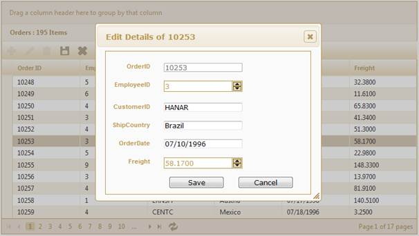

The steps to work with the editing feature through GridPropertiesModel are as follows.
1. Add the MicrosoftMvcValidation.debug.js file in the master page.
|
[ASPX]
<head runat="server"> <title><asp:ContentPlaceHolder ID="TitleContent" runat="server" /></title> ……… <script src="<%= Url.Content("~/Scripts/MicrosoftMvcValidation.debug.js") %>" type="text/javascript"></script> </head> |
2. Create a model in the application.
3. Add the following code in the Index.aspx file, to create the Grid control in View.
|
[ASPX]
<%=Html.Syncfusion().Grid<Order>("Grid1", "GridModel", column => { column.Add(p => p.OrderID).HeaderText("Order ID"); column.Add(p => p.CustomerID).HeaderText("Customer ID"); column.Add(p => p.ShipCountry).HeaderText("Ship Country; column.Add(p => p.OrderDate).HeaderText("Order Date").Format("{0:MM/dd/yyyy}"); column.Add(p => p.Freight).HeaderText("Freight; column.Add(p => p.Delivered).HeaderText("Delivered"); })
})%>
|
|
[Razor]
@{Html.Syncfusion().Grid<Order>("Grid1", "GridModel", column => { column.Add(p => p.OrderID).HeaderText("Order ID"); column.Add(p => p.CustomerID).HeaderText("Customer ID"); column.Add(p => p.ShipCountry).HeaderText("Ship Country; column.Add(p => p.OrderDate).HeaderText("Order Date").Format("{0:MM/dd/yyyy}"); column.Add(p => p.Freight).HeaderText("Freight; column.Add(p => p.Delivered).HeaderText("Delivered"); }) .Render(); )}
|
4. Create a GridPropertiesModel in the Index method and assign the grid properties in the model.
|
Controller GridPropertiesModel<EditableOrder> model = new GridPropertiesModel<EditableOrder>() { DataSource = OrderRepository.GetAllRecords(), Caption = "Orders", AllowPaging = true, AllowSorting = true, AllowGrouping=true, AutoFormat=Skins.Sandune };
ViewData["GridModel"] = model; |
5. Enable editing by using the Editing property in the GridPropertiesModel and configure the editing properties such as AllowNew, AllowEdit, and AllowDelete, as displayed below.
|
Controller // Create an object for grid editing and enable the edit, add new, and delete actions. GridEditing edit = new GridEditing() { AllowEdit = true, AllowDelete = true, AllowNew = true }; // Set the action mappers for the insert, delete, and save actions. edit.DeleteMapper = "DeleteOrder"; edit.InsertMapper = "AddOrder"; edit.GridSaveMapper = "OrderSave"; |
6. Customize the dialog as shown below:
|
Controller DialogModel dialog = new DialogModel(); dialog.Height = 500; dialog.Width = 460; dialog.Show = DialogAnimations.bounce; dialog.Hide = DialogAnimations.fold; dialog.Position = DialogPositions.Center; edit.Dialog = dialog; |
7. Specify the GridEditMode through the EditMode property.
|
Controller // Set the Edit mode. edit.EditMode = GridEditMode.Dialog; |
8. Specify the primary property which uniquely identifies the grid record.
|
Controller // Add the PrimaryKey value to uniquely identify the record. edit.PrimaryKey = new List<string>() { "OrderID" }; |
9. Add the edit object to the model.
|
Controller // Add the edit object to the model. model.Editing = edit; |
10. Essential Grid allows adding new records through grid toolbar items. In this example, AddNew, Edit, Delete, Save, and Cancel buttons have been added as toolbar items as displayed below:
|
Controller // Configure the toolbar. ToolbarSettings toolbar = new ToolbarSettings(); toolbar.Enable = true; // Add the AddNew, Edit, Delete, Save, and Cancel buttons to the toolbar. toolbar.Items.Add(new ToolbarOptions() { ItemType= GridToolBarItems.AddNew}); toolbar.Items.Add(new ToolbarOptions() { ItemType = GridToolBarItems.Edit }); toolbar.Items.Add(new ToolbarOptions() { ItemType = GridToolBarItems.Delete }); toolbar.Items.Add(new ToolbarOptions() { ItemType = GridToolBarItems.Update }); toolbar.Items.Add(new ToolbarOptions() { ItemType = GridToolBarItems.Cancel }); model.ToolBar = toolbar; |
11. In the controller, create a method to add new records to grid, as displayed below. In this example, the repository method Add() is being created to insert records in the database. Refer to the repository action method displayed below.
|
Controller /// <summary> /// Used to insert the record in the database and refresh the grid. /// </summary> /// <param name="ord">Editable order.</param> /// <returns>HtmlActionResult returns the data displayed in the grid.</returns> [AcceptVerbs(HttpVerbs.Post)] public ActionResult AddOrder(EditableOrder ord) { // Repository action method Add() is used to insert records in the data source. OrderRepository.Add(ord); // After adding the record to the database, refresh the grid. var data = OrderRepository.GetAllRecords(); return data.GridActions<EditableOrder>(); } |
12. In the controller, create a method to save changes as displayed below.
In this example, the repository method Update() is used to update records to the data source:
|
Controller /// Used to insert the record in the database and refresh the grid. /// </summary> /// <param name="ord">Editable order.</param> /// <returns>HtmlActionResult returns the data displayed in the grid.</returns> [AcceptVerbs(HttpVerbs.Post)] public ActionResult OrderSave(EditableOrder ord) { // Repository action method Update is used to update the records into datasource. OrderRepository.Update(ord); //After saving the records into datasource refresh the grid. var data = OrderRepository.GetAllRecords(); return data.GridActions<EditableOrder>(); } |
13. In the controller, create a method to delete the records from the database as displayed below.
In this example, the repository action Delete() will delete the record from the data source.
|
Controller /// <summary> /// Used to delete records from the data source and refresh the grid. /// </summary> /// <param name="OrderID">Primary key values.</param> /// <returns>HtmlActionResult returns the data displayed in the grid.</returns> [AcceptVerbs(HttpVerbs.Post)] public ActionResult DeleteOrder(int OrderID) { // Repoistory action Delete() deletes the given primary value record from the data source. OrderRepository.Delete(OrderID); // After deleting, refresh the grid. var data = OrderRepository.GetAllRecords(); return data.GridActions<EditableOrder>(); } |
14. Run the application. The grid will appear as displayed below.

Figure 184: Dialog Editing through the GridPropertiesModel